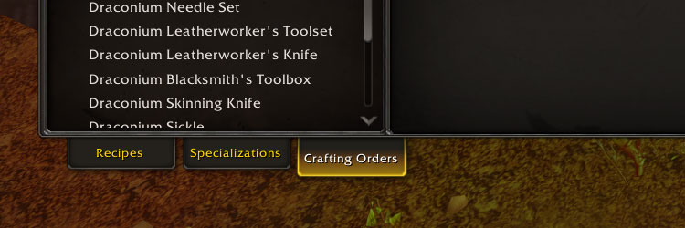
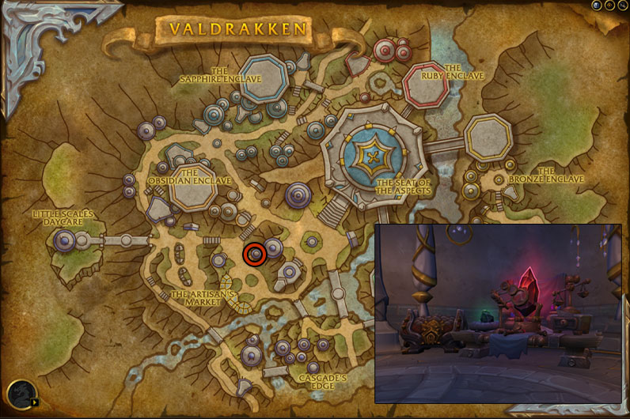
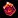
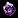
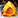
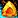
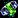
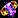

This Dragonflight Jewelcrafting leveling guide will show you the fastest and easiest way how to level your Dragon Isles Jewelcrafting skill up from 1 to 100.
This Dragonflight Jewelcrafting leveling guide will show you the fastest and easiest way how to level your Dragon Isles Jewelcrafting skill up from 1 to 100.
Table of contents
Dragonflight Jewelcrafting Trainers
- Misty Catseye in The Waking Shores.
- Tuluradormi in Valdrakken.
- Herrod in The Azura Span.
- Uluami in Ohn'ahran Plains
New Dragonflight Jewelcrafting features
There are a lot of new stats added to professions in Dragonflight, so here is a quick explanation for some of these.
Recipe Difficulty
Recipe Difficulty shows you how much profession skill is required to make a recipe at the highest quality. You can see your current profession Skill below the Recipe Difficulty stat. Your Skill comes from your base profession skill, specializations, profession equipment, racials, and using high-quality reagents. So, your profession skill can go well above 100.
Item Quality
Every crafted piece of Jewelcrafting equipement have 5 different qualities. Jewelcrafting Crafted Reagents, Enchantments, and Consumable items have 3 different qualities.
Basically, if you have higher skill, you can make higher-ilvl gear, higher-quality consumables that give more stat, and higher-quality reagents that give more profession skill when used in recipes.
Inspiration, Multicraft, Resourcefulness
- Inspiration: Each time you craft something, there is a chance you get Inspired and craft the recipe with some bonus profession skill, so you can craft an item with higher quality than you could normally. This stat is only helpful when you craft recipes with higher Recipe Difficulty than your current Skill.
- Resourcefulness: You have a chance to use fewer reagents.
- Multicraft: You have a chance to craft additional items. (doesn't work on crafted gear, only consumables and reagents)
Dragon Isles Jewelcrafting Knowledge
Dragon Isles Jewelcrafting Knowledge points are the "talent points" you can put into your profession specialization to learn new skills, stats, and bonuses.
Crafting Orders
Crafting Orders are a new way for players to request a crafter to craft something for them. The interface basically looks like the Auction House, but instead of players posting Auctions, it will be filled with Crafting Orders that players can complete as Jewelcrafters.
Completing crafting orders can give you skill points if you complete orders for items that would normally give you a skill point.
How to Complete Crafting Orders
Clicking on the Crafting Orders tab at the bottom of your profession window will open the Crafting Order UI, where you can browse Crafting Orders posted by other players. You must be near a Crafting Table for your profession to access Crafting Orders.

Jewelcrafting Crafting Table location
You can find the Jewelcrafting crafting table in Valdrakken at the location in the picture below.

Shopping List
This is the total list of materials required to reach 100. The quality doesn't matter. Buy the cheapest.
- 30x
 Serevite Ore
Serevite Ore - 22x Shimmering Clasp
- 5x
 Rousing Earth
Rousing Earth - 68x
 Rousing Fire
Rousing Fire - 2x
 Rousing Frost
Rousing Frost - 2x
 Rousing Air
Rousing Air - 12x Eternity Amber
- 3x Mystic Sapphire
- 3x

Queen's Ruby - 4x

Sundered Onyx - 2x Vibrant Emerald
- 11x Fractured Glass
- 70x Silken Gemdust
- 60x Wildercloth
- 29x Nozdorite
- 24x Awakened Fire
- 1x
 Awakened Air
Awakened Air - 1x
 Awakened Earth
Awakened Earth - 1x Awakened Frost
- 9x Ysemerald
- 9x
 Elemental Harmony
Elemental Harmony
Leveling Dragonflight Jewelcrafting
Racial Bonuses
Draenei characters have +10 Jewelcrafting skill because of their passive, and Kul Tiran characters have +5 from. Any extra Jewelcrafting skill means recipes stay orange for more points. You can save some gold by doing lower level recipes for more points.
First Craft Bonus
You will get 1x Dragon Isles Jewelcrafting Knowledge talent points each time you craft something for the first time. Dragon Isles Jewelcrafting Knowledge is valuable and has a weekly cap from other sources. So, instead of leveling Jewelcrafting and then going back to craft grey recipes, this leveling guide is designed to get the "First Craft Bonus" from most recipes while they give you skill points.
1 - 6
Use  Dragon Isles Prospecting on 25x
Dragon Isles Prospecting on 25x  Serevite Ore (5x Prospecting).
Serevite Ore (5x Prospecting).
6 - 12
Buy 1x  Jeweler's Toolset , 1x Misshapen Filigree and 5x Draconic Stopper from Shakey Flatlap in Valdrakken. (he is outside in front of the building where your trainer is)
Jeweler's Toolset , 1x Misshapen Filigree and 5x Draconic Stopper from Shakey Flatlap in Valdrakken. (he is outside in front of the building where your trainer is)
Make one from each of these:
- 1x
 Glossy Stone - 4x Crumbled Stone, 2x Rousing Earth, 1x Eternity Amber
Glossy Stone - 4x Crumbled Stone, 2x Rousing Earth, 1x Eternity Amber - 1x Shimmering Clasp - 1x Misshapen Filigree, 1x Mystic Sapphire
- 1x Dragon Isles Crushing - Use it on Eternity Amber.
Then make three Solid Eternity Amber:
- 3x Solid Eternity Amber - 6x Eternity Amber
12 - 15
Make one from each of these:
- 1x
 Frameless Lens - 1x Rousing Earth, 3x Fractured Glass, 2x Silken Gemdust
Frameless Lens - 1x Rousing Earth, 3x Fractured Glass, 2x Silken Gemdust - 1x Energized Vibrant Emerald - 2x Rousing Frost, 2x Vibrant Emerald
- 1x Zen Mystic Sapphire - 2x Rousing Earth, 2x Mystic Sapphire
15 - 20
Make one from each of these:
- 1x Sensei's Sundered Onyx - 2x Rousing Fire, 2x Sundered Onyx
- 1x Crafty Queen's Ruby - 2x Rousing Air, 2x Queen's Ruby
- 1x Band of New Beginnings - 5x Rousing Fire, 1x Shimmering Clasp, 2x Eternity Amber
- 1x Pendant of Impending Perils - 1x Shimmering Clasp, 1x Sundered Onyx
20 - 26
Craft these three to get your "First Craft" bonuses.
- 1x
 Bold-Print Bifocals - 2x Serevite Ore, 2x Frameless Lens
Bold-Print Bifocals - 2x Serevite Ore, 2x Frameless Lens - 1x
 Sundered Onyx Loupe - 2x Serevite Ore, 1x Sundered Onyx, 2x Frameless Lens
Sundered Onyx Loupe - 2x Serevite Ore, 1x Sundered Onyx, 2x Frameless Lens - 1x Draconic Vial - 1x Rousing Fire, 5x Fractured Glass, 5x Draconic Stopper, 1x Silken Gemdust
Equip the  Sundered Onyx Loupe. You can sell the
Sundered Onyx Loupe. You can sell the  Jeweler's Toolset, you won't need it anymore.
Jeweler's Toolset, you won't need it anymore.
Jewelcrafting Specializations
When you hit 25, you will unlock Jewelcrafting specializations.
Which Specialization to choose first?
I recommend choosing Enterprising as your first specialization, so you use the Blotting Sand recipe for leveling between 29-55. (You can learn all 4 specializations as you level up your profession).
You will need 50 skill points to unlock the second specialization, 65 for the third, and 75 for the fourth.
Where should you put your Dragon Isles Jewelcrafting Knowledge points?
Don't spend any points yet! I recommend leveling your profession to 75 first. You will need 20 points to unlock a recipe that you will use to level Jewelcrafting. (more on this later at 75)
26 - 29
- 1x Timewatcher's Patience - 3x Fractured Glass, 4x Eternity Amber, 1x Silken Gemdust
- 2x Revitalizing Red Carving - 2x Shimmering Clasp, 2x Queen's Ruby, 4x Glossy Stone, 2x Silken Gemdust
29 - 55
60x Blotting Sand - 60x Rousing Fire, 60x Wildercloth, 60x Silken Gemdust
You can learn this recipe by picking the Enterprising specialization as your first. If you didn't follow the guide and picked another specialization, you can make the following alternative recipe below.
Alternative recipe
Craft any recipe that gives you skill points if you are not at 30, then learn the gem recipe below from the trainer.
25x Jagged Nozdorite - 25x Awakened Fire, 25x Nozdorite
55 - 75
Craft one from each gem to get the "First Craft" bonuses.
- 1x

Forceful Nozdorite - 1x Awakened Air, 1x Nozdorite - 1x Puissant Nozdorite - 1x Awakened Earth, 1x Nozdorite
- 1x Jagged Nozdorite - 1x Awakened Fire, 1x Nozdorite
- 1x

Steady Nozdorite - 1x Awakened Frost, 1x Nozdorite
Then craft Jagged Nozdorite until you reach 75.
25x Jagged Nozdorite - 25x Awakened Fire, 25x Nozdorite
75 - 100
From this point, most recipes that are good for leveling require a  Spark of Ingenuity. This crafting reagent Binds on Pickup (BoP), so you can't just buy it from the Auction House.
Spark of Ingenuity. This crafting reagent Binds on Pickup (BoP), so you can't just buy it from the Auction House.
Below is a step-by-step guide on how to learn the  Spark of Ingenuity. Step 2 is the most time-consuming, but it's account-wide, and it's something you probably already completed.
Spark of Ingenuity. Step 2 is the most time-consuming, but it's account-wide, and it's something you probably already completed.
Step 1. #Learning the Ring recipe
- Put 10 points into the Setting specialization.
- Learn the Jewelry sub-specialization.
- Put 10 points into Jewelry.
- Learn the

Rings sub-specialization. This will teach you the Signet of Titanic Insight recipe.
You will use this recipe to level to 100. This is the easiest to get and the cheapest to make.
Step 2. #Dragonflight campaign quests
You have already completed this step if you see world quests on your world map.
To get Spark of Ingenuity, you must complete the Dragonflight main story campaign quests until you unlock World Quests. This is ACCOUNT-WIDE, so you only need to complete these quests with one of your characters. If you open your quest log, you will find these quests at the top in the campaign section under the "Dragonflight" title.
- Complete the Dragonflight campaign quests until you get
 Renown of the Dragon Isles from Alexstrasza the Life-Binder.
Renown of the Dragon Isles from Alexstrasza the Life-Binder. - Talk to Therazal to complete Renown of the Dragon Isles.
Step 3. #Engine of Innovation Questline
Pick up the  Learning Ingenuity quest from Therazal. This quest will start the Engine of Innovation Questline that will award you with Spark of Ingenuity.
Learning Ingenuity quest from Therazal. This quest will start the Engine of Innovation Questline that will award you with Spark of Ingenuity.
Talk to Greyzik Cobblefinger to complete  Learning Ingenuity and pick up the
Learning Ingenuity and pick up the  Jump-Start? Jump-Starting! quest.
Jump-Start? Jump-Starting! quest.
You don't have to do it again if you have already completed the Engine of Innovation Questline with one of your characters. Talk to Greyzik Cobblefinger to skip the quests, and then talk to Maiden of Inspiration to get your 5x  Spark of Ingenuity.
Spark of Ingenuity.
Otherwise, you must complete the entire Engine of Innovation Questline until you get all five  Spark of Ingenuity.
Spark of Ingenuity.
Step 3. #Getting More Spark of Ingenuity with Alts
You will need 9x  Spark of Ingenuity to level to 100, but you can only get 5 on one character. Fortunately, you can use the crafting order system to send crafting orders to your characters, so you can get more from your alts or by creating trial characters.
Spark of Ingenuity to level to 100, but you can only get 5 on one character. Fortunately, you can use the crafting order system to send crafting orders to your characters, so you can get more from your alts or by creating trial characters.
Creating a trial character
If you have two level 58 alt characters, you can skip this part and use them instead of creating trials.
- Go to the character selection screen and click "Create New Character" in the bottom left corner.
- On the character creation page, tick the "Class Trial" box in the bottom left corner.
- Choose any class and talents, then create your Character.
- Go to the portal room in Orgrimmar/Stormwind and click on the Valdrakken portal.
Skipping quests to get 5x Sparks
- Talk to Greyzik Cobblefinger about skipping the quests, and then talk to Maiden of Inspiration.
- Talk to the crafting order NPC Clerk Silverpaw in Valdrakken.
- Click on Armor -> Miscellaneous -> Finger, then click "Search" and pick Signet of Titanic Insight
- Change Public Order to Personal Order in the top right, then type in your main character name.
- You don't have to fill in materials besides the Spark of Ingenuity in the "Spark" slot. You can fill the rest of the materials with your main.
- Send 4 crafting orders to your main.
Leveling to 100
- Log in with your main character.
- Go to the Jewelcrafting crafting table in Valdrakken. (scroll back to the crafting order section above in the guide if you don't know where it is)
- Open your profession window and click the Crafting Orders tab at the bottom.
- Click on the Personal Tab and complete the crafting orders from your alts.
- Craft 5x more rings with the Sparks in your inventory.